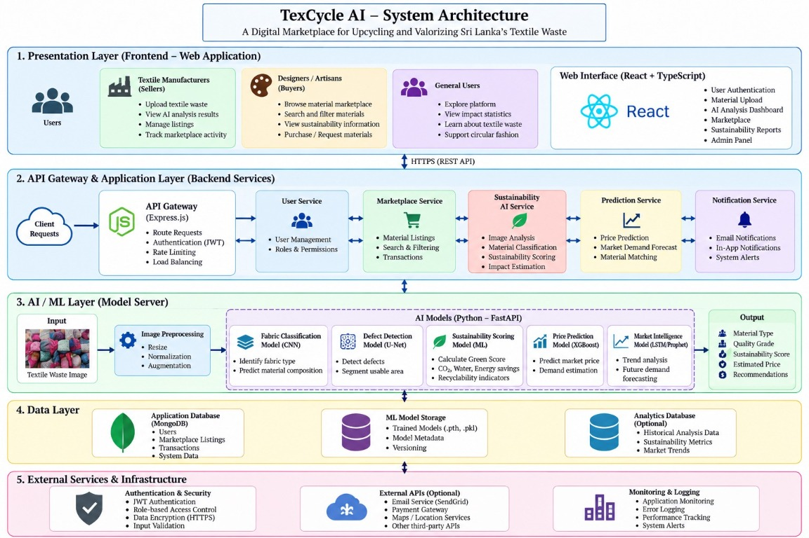

TexCycle AIAI-Powered Digital Marketplace for Upcycling Sri Lanka's Textile Waste
A research-driven platform combining artificial intelligence, machine learning, and digital marketplace functionality to assess textile materials and connect them with upcycling opportunities in Sri Lanka.
One platform, four contributions
Four Research Components
Each team member owns a distinct AI sub-system. Together they form an integrated textile-waste assessment and marketplace pipeline.
Fabric Intelligence
EfficientNet-B3 fabric classification and MobileNetV2 defect analysis — 16-class identification and condition outputs.
89.68% test accuracy →
Member 02Sustainability Intelligence
Circularity, recyclability, CO₂ and water estimates — environmental indicator scoring with sustainability grades.
R² up to 0.9887 →
Member 03Commercial Intelligence
XGBoost reference pricing, buyer-category recommendation via Random Forest, and lifecycle traceability.
R² 0.9590 pricing →
Member 04Marketplace Analytics
Listing success, estimated days to sell, demand level and market trend — seller planning support.
99.54% demand accuracy →
Technical stack
System Architecture Preview
Approved system architecture diagram for the TexCycle AI project.

What has been built
Implemented System Features
Prototype outputs using development and synthetic data. Not real-market guarantees.
Fabric Intelligence
16-class fabric classification, defect/no-defect analysis and application-level condition-related outputs (health score, repairability, lifespan).
Sustainability Intelligence
Circularity, recyclability and environmental indicator estimates with explicit evidence boundaries and sustainability grade assignment.
Commercial Intelligence
Reference pricing via XGBoost regression, ranked buyer-category recommendations, and lifecycle event traceability.
Marketplace Analytics
Demand, listing-success, estimated sales-time and market-trend predictions to help sellers plan listings effectively.
Seller Workflow
Upload textile image, run AI analysis, review all four outputs, and prepare a marketplace listing — end-to-end.
Evidence Boundary
Prototype metrics use synthetic or development data. Real-market validation, calibration and stakeholder testing are future work.